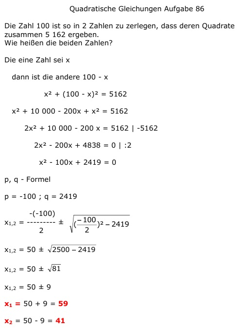

Aufgabe 86 Die Zahl 100 ist so in 2 Zahlen zu zerlegen, dass deren Quadrate zusammen 5 169 ergeben. Wie heißen die beiden Zahlen? Die eine Zahl sei x dann ist die andere 100 - x x2 + (100 - x)2 = 5162 x2 + 10 000 - 200x + x2 = 5162 2x2 + 10 000 - 200 x = 5162 |-5162 2x2 - 200x + 4838 = 0 |:2 x2 - 100x + 2419 = 0 p, q - Formel p = -100 ; q = 2419  x1,2 = 50 ± 9 x1 = 50 + 9 = 59 x2 = 50 - 9 = 41